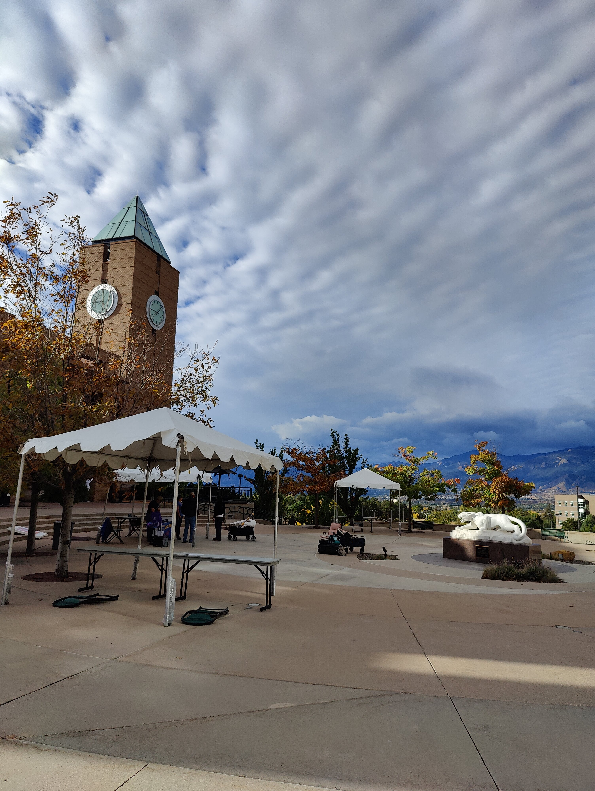
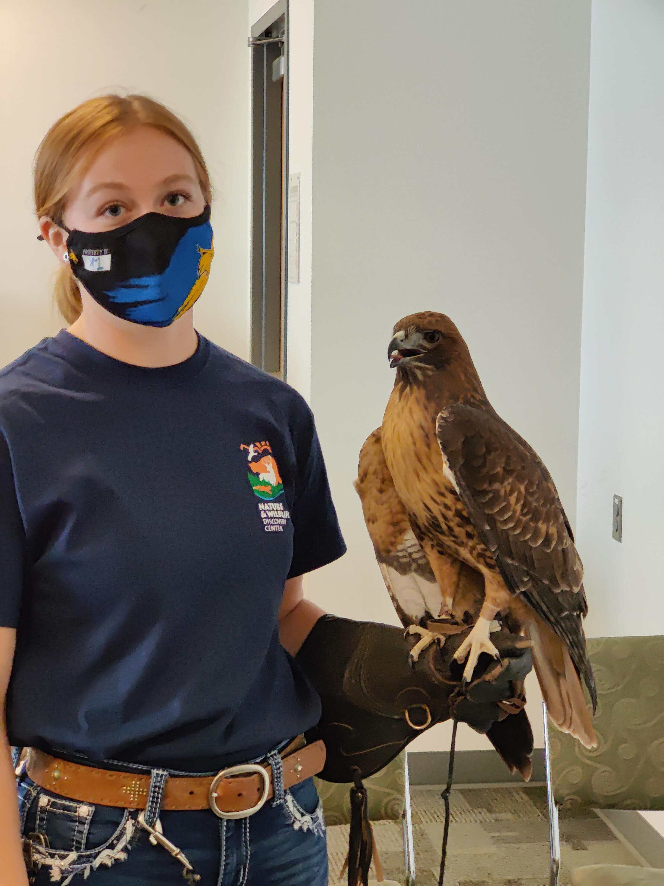
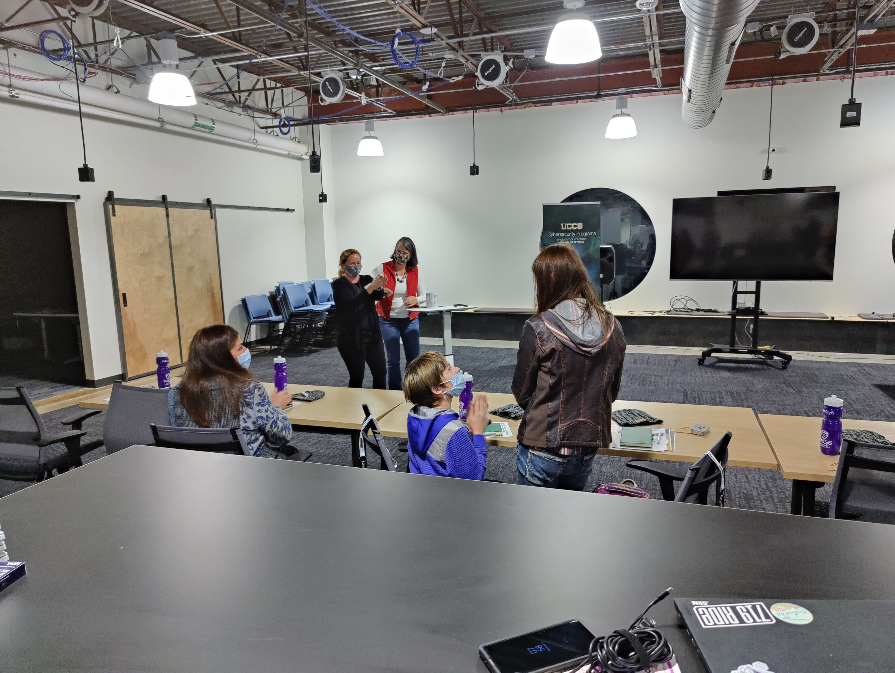

Cool Science Fair
Hello P2C4! It’s Nick, Vice President of the club. This is an update on how club operations ran during our participation in the STEAM Cool-Science Fair held at UCCS Campus. On October 9th and 13th P2C4 had the opportunity to take part in this event. I am so glad I signed up as it allowed me to expand my network of people and gain experience through helping. It also gave me the chance to finally get to know April Frost, she is an awesome professor at PPCC, she helped us run the booth the whole day and provided support for us while also holding down the fort when we were also out exploring, learning about science, and chatting with UCCS faculty!

Throughout the first day, we had a few people show up to try and solve our cyber challenges. I kept thinking our printouts were too difficult. That feeling didn’t linger long because we had many people tell us that USAFA’s cyber booth was too hard for anyone to understand, and with this I had peace. I was able to get a Kali Linux computer set up at our booth and got a few people interested by showing some NCL password cracking as well.

Phew!!
By the end of the event we were all tired and hungry, luckily they had lunch at the event, so everyone was taken care of. Shout-out to April for coming in clutch with those vegan Oreo’s! We were all beat and ready to go and as soon as it was time, we left.
“One of the main cyber-risks is to think they don’t exist. The other is to try to treat all potential risks. Fix the basics, protect first what matters for your business and be ready to react properly to pertinent threats. Think data, but also business services integrity, awareness, customer xperience, compliance, and reputation.”
― Stephane Nappo
Skip forward four days and a bunch of emails…
The event on the 9th was targeted at a variety of people, trying to get as many people interested in cyber as possible. On the 13th we had another day of fun with people who were already interested during the festival showed up to learn and do more. Special thanks to Gretchen, she did a great job planning this and giving everyone a chance to learn cyber! As an example, Gretchen and Terri took all the adults to one room to work on entry level coding and cyber, while Jonathan and I were playing card games with kids. The UCCS cyber club was also there getting kids addicted to Over-The-Wire. In the end, everyone there left knowing more than they showed up with, including ourselves.

Thought up by yours truly, the ending of the event was hosted by P2C4. Our club officers, specifically Robert and I, got a hold of some older computers and reimaged them with the goal of giving one away at this event. At the start of the event, Terri had everyone fill out a raffle, planning to host a drawing at the finale of the event to see who would win the Linux Mint Laptop. And the winner was… a mom, although her son did look mighty happy. We were very grateful to be able to help that family. The best part is the surprised look they got when they found out it was a raffle for a laptop. Terri made sure they all had no idea so it would be a surprise, I only wish I would have taken more photos.
